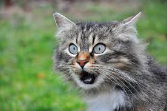
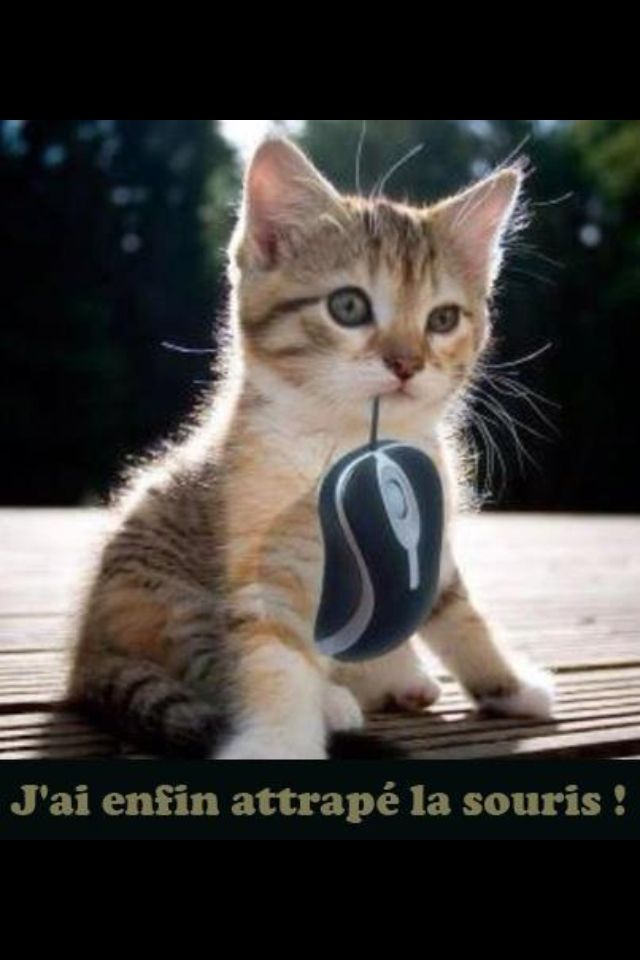
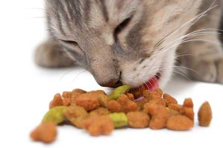

MES SITES PREFERES :
QUELQUES INFOS :
Ma bouille de BG
Nom : chat'plin
Prenom : chat'rlie
Adresse : Pas vraiment d'endroit précis, des fois le canapé, d'autre fois le lit...etc
QUELQUES VIDEO SYMPA :
MES PASSIONS :
La chasse
La faim n’est pas la principale raison qui pousse les chats à chasser. Ils sont en effet capables de s’y mettre immédiatement après avoir reçu de leurs maîtres un repas copieux. Certes, le temps consacré à la chasse peut doubler quand la pâtée est maigre, mais même un chat très bien nourri y consacre une grande partie de la journée. Il s’agit essentiellement d’une envie de jouer très forte qui pousse le chat à capturer des proies et, paradoxalement, c’est la proie elle-même qui stimule ce désir de jeu en sautant ou en couinant. Ensuite, le jeu qui consiste à jeter en l’air, à secouer, à attraper ou à repousser ce qui a été capturé est considéré par les experts comme une manière de libérer le stress et la tension qui se sont accumulés pendant la chasse. Chasser équivaut à jouer, et c’est ce que la mère chatte inclut dans le lot d’expériences qu’elle transmet à ses petits.

 15 like
15 like


Les Croquettes
La nourriture sèche, communément appelée « croquette » ou granulé (8 à 10 % d’humidité) est généralement faite par extrusion de la viande à haute pression et haute température. Elle peut être complétée par d’autres ingrédients et recouverte de graisse pour en améliorer le goût.La plupart des marques d’alimentation pour chats utilisent des céréales et des sous-produits animaux comme ingrédients principaux. Les marques dites « premium », « holistiques » ou « naturelles » utilisent des préparations avec une plus grande proportion de viande que leur concurrentes (de 30 à 40 %, contre 2 à 4 % pour les croquettes bas de gamme2). Certaines références de produits suppriment même totalement l’utilisation de céréales. Bien que les problèmes digestifs (diarrhée ou constipation) ne soient pas réputés douloureux pour le chat, lors d’un changement d’alimentation, une transition peut être effectuée sur quelques jours en augmentant petit à petit la proportion des nouvelles croquettes3.Par ailleurs, il est fréquent de lire que le taux de protéines des croquettes ne serait pas le seul facteur à prendre en compte puisque le chat digèrerait mieux les protéines animales que les protéines végétales. Néanmoins, cette assertion, récente, n’est ni prouvée médicalement ni mise en évidence statistiquement, à l’exception d’une recherche japonaise sur le gluten
La sieste

La sieste est un temps de repos pris au cours de la journée (ou la nuit pour les travailleurs nocturnes), le plus souvent après le déjeuner. La sieste1 ferait partie du patrimoine génétique de l'être humain et serait programmée pour être pratiquée entre 12 h et 15 h au moment où la fatigue apparaît et l'attention diminue, et dure généralement entre 10 minutes et 45 minutes. Contrairement aux idées reçues, même si l'on n'a pas pris de repas avant, le besoin de dormir se fait sentir 2,3. Néanmoins le besoin de sieste est également plus présent après un gros repas